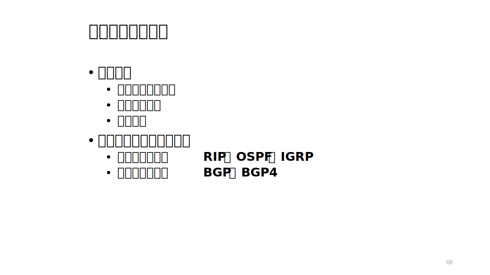

Computer Network Chapter 4
本文最后更新于：June 2, 2022 pm
Chapter 4: Network Layer
Introduction
网络层负责将数据报从发送方主机传输到接收方主机，网络层协议存在于每台主机和路由器上，路由器将检查所有经过它的IP分组的分组头。
网络层的主要功能:
- 转发: 路由器将收到的分组移动到适当的输出链路。
- 选路: 决定分组从源端到目的端所经过的路径.
网络层还有第三种功能: 连接建立，但这只在某些网络体系结构上有所实现，在Internet上并没有提供这种功能。
网络服务模型:
- 网络层为单个数据分组提供的服务:
- 确保交付
- 具有时延上界（不到40ms ）的确保交付
- 网络层为分组的流提供的服务:
- 有序的分组递交
- 确保最小带宽
- 确保最大时延抖动
**但是！**现在的因特网网络层并没有提供上述服务，因特网只提供了尽力而为的服务(实际上就是没有提供任何特定的服务)。
routing: 决定分组从源端到目的端所经过路径的过程。
forwarding: 将分组从一个输入链路接口转移到适当输出链路接口的过程。
Principles of Router
路由器的主要功能:
- 运行路由算法(RIP, OSPF, BGP)，为选路服务
- 将分组从输入链路转发到适当的输出链路，转发服务
由上图可以看到，路由器的工作原理就是将分组从输入链路根据转发表转发到输出链路。涉及到的问题主要就是路由表的更新、路由算法的运行和转发的实现。
其中实现转发功能的我们称之为Data Plane(数据平面)，实现选路功能的我们称之为Control Plane(控制平面)。
Data Plane(数据平面)
Router(路由器)
Input Port
输入端口从链路层拿到数据帧，通过缓存查询转发表后将其通过交换结构转发到对应的输出端口。
转发表格式
由于在网络层没有呼叫建立，路由器没有像端到端那样的连接概念，因此对分组的转发只能根据目的主机地址来确定。并且在同一个源-目的主机对中的分组可能走不同的路径，因为路由表是一张动态的表，会时常发生改变，即便是同一个传输层的连接也可能通过不同的路由器进行传输。
根据目的主机地址来转发的方法有最长前缀匹配法: 通过将分组发送到转发表内的匹配成功最长前缀项对应的输出链路来实现转发的功能。当转发表中有多个输出链路具有匹配前缀时，应当选取最长的匹配项作为输出链路。
通过示例的最长前缀匹配转发表可以知道，目的地址为11001000 00010111 00010110 10100001的分组应该转发到0号输出链路;目的地址为11001000 00010111 00011000 10101010的分组应该转发到1号输出链路。
Switch Structure(交换结构)
交换速度：分组从输入端到输出端的速度。
交换结构的功能是将分组从输入缓冲区交换到适当的输出缓冲区。目前主要有3种不同的交换结构，分别是:
- Switching via memory(内存交换): 为第一代路由器采用的方案，分组被拷贝到系统内存，然后由CPU的直接控制完成。速度受内存带宽限制 (每个分组需要两次经过总线，一次拷贝进内存一次由内存拷贝进输出链路缓存)。不支持同时传输多个分组。
- Switching via bus(总线交换): 分组从输入端口缓存经过一根共享总线到达输出端口缓存。交换速率受总线带宽限制(一般来说对接入路由器和企业路由器足以)。不支持同时传输多个分组。
- Switching via interconnection network(互联网络交换): 通过内部互连网络，克服总线带宽限制，并且支持同时传输到多个输出端口。
Output Port(输出端口)
Queueing(排队)
当网络中需要传输的数据报过多时，就会产生一个排队，尽管输入链路和输出链路上存在一定的缓冲区，但大小终究是有限的，当缓冲区满时，新到的数据报会导致缓存的溢出，这样就会导致分组的丢失。根据排队的位置不同可以分为:
-
输入端口排队: 当交换速度比所有输入端口的综合速度慢时就会导致输入端口产生排队，排队过长当溢出时就会导致分组的丢失。输入端口有一种特殊的阻塞: 线头阻塞Head-of-the-Line (HOL) blocking:排在队列前面的分组阻止队列中其他的分组向前移动，因为内存交换和总线交换无法同时对不同输出端口进行交换，导致了部分端口繁忙但是其他端口空闲总体却阻塞严重的情况。
-
输出端口排队: 当分组从交换结构到达的速率快于输出链路速率时,需要缓存就会产生排队，排队过长当溢出时就会导致分组的丢失。
The Internet Protocol(IP协议)
IP地址: 分配给主机或路由器接口的32-bit标识符。
接口: 主机/路由器与物理链路之间的边界。
- 路由器有多个接口
- 主机可以有多个接口
- 每个接口有一个IP地址
IP地址:
- 子网部分 (高位 bits)
- 主机部分 (低位 bits)
IPv4 Datagram format(IPv4数据报格式)
IPv4的典型首部为20Bytes(没有可变长的选项)。
- 版本号: IPv4为4，IPv6具有自己的数据报格式。
- 头部长度: 头部长度是头部的字节数，不包括数据部分。注意，这个值是以4个字节为单位的。
- 服务类型: 较少使用。
- 总长度: 数据报的总长度，包括头部和数据部分。注意，这个值是以单个字节为单位的。
- 分片ID: 用于标识分片后的唯一标识，有助于分片后重组。
- flag: 标志位，用于确定是否为最后一个分片(最后一片为1，非最后一片为0)。
- offset: 偏移量，用于标识分片后的本片数据在原数据报的开始位置，可以保障是否丢片和用来重组。注意，这个值是以8个字节为单位的。
- ttl: 生存时间，路由器在路由到目的地之前，每过一个路由器这个字段的值会-1。
- upper layer protocol: 协议类型，用于标识下一层协议。
- 校验和: 校验和用于校验数据报的正确性。
- 源IP地址和目的IP地址: 用以路由器转发。
IPv4 Datagram Fregmentation(IPv4分片)
网络链路有MTU(Maximum Transmission Unit)限制，不同的链路类型有不同的MTUs。因此在底层链路层采用不同链路类型，数据报允许的最大长度也不同，这样很难具有一个统一的标准并且链路不同段采用的类型也不同，数据报的大小会收到木桶效应的影响，对网络层造成了不好的影响，因此引入了分片和重组技术。
- 分片: 大的IP数据报在网络中被划分，即一个数据报被分成多个小数据报，这些小数据报的长度不大于MTU。
- 分组: 最终目的地在收到数据报的片后进行重新组装成完整的初始数据报的操作。
**注意: 分片后的数据报长度要算上头部长度后仍不超过MTU。**即MTU为1500bytes时，原数据报长度为4000bytes，其中数据部分为3980bytes，则第一个片只能承载1480bytes的数据部分，第二个片承载1480bytes的数据部分，第三片则承载1020btyes的数据部分，但每一片都有自己的20bytes的首部。分片在计算偏移量时不需要将头部长度加上，只需要对数据部分计算即可，千万记住offset的单位是8个字节！！！。
IPv4 Addressing(IPv4编址)
子网: 为了确定子网，分开主机和路由器的每个接口，从而产生了几个分离的网络岛，这些独立网络中的每一个叫做一个子网
- 设备接口的IP地址具有同样的网络部分
- 没有路由器的介入，物理上能够相互到达
子网掩码的功能：给定IP地址和子网掩码，即可获得该IP地址主机所在的网络地址(作掩码计算)。
-
分类IP地址:
-
Classless Inter-Domain Routing(无类域间路由)
地址中的网络部分可以任意长。地址格式: a.b.c.d/x, 这里 x 是地址网络部分的bit数。
层次寻址和DHCP
层次寻址允许有效的路由信息通告:
可以看出层次寻址能体现更加具体的路由关系，更加体现出子网存在的意义，也减少了网络核心区域的传输压力，但同时也引出了子网下IP分配的问题，对此DHCP(Dynamic Host Configuration Protocol)协议可以解决。
DHCP:
- 允许主机在加入网络时从网络服务器动态得到IP地址
- 能够在使用时续借地址租用
- 允许重用地址 (只是连接时拥有地址）
- 支持准备加入网络的移动用户 (更简单)
Internet Control Message Protocol(控制消息协议)
ICMP是基于IP协议工作的，但是它并不是传输层的功能，因此仍然把它归结为网络层协议。
ICMP的功能包括:
- 确认IP包是否成功到达目标地址。
- 通知在发送过程中IP包被丢弃的原因。
从上面ICMP的功能可以看出，ICMP就是一个"错误侦测与回报机制”"，其目的就是让我们能够检测网路的连线状况﹐也能确保连线的准确性。
ICMP主要运用
- 测试网络连通性和时延(ping)
- 测试网络的可靠性(tracert)
IPv6
初始动机: 32-bit地址空间即将用尽。
其他动机:
- 首部格式可帮助加速处理/转发
- 改变首部利于QoS要求
IPv6的特点:
- 地址长度为128bit
- 不允许分片
- 首部固定为40bytes(不允许存在选项)
IPv4过渡到IPv6的方式
并不是所有的路由器都能够同时升级，所以不存在标志日。
- 双栈: 一些路由器具有双重栈 (v6, v4) 能够在两种格式中转换。
- 隧道: 在穿过IPv4路由器时，IPv6分组作为 IPv4分组的负载。

NAT
具体见课程设计
Control Plane(控制平面)
数据平面完成了逻辑上的转发功能，但前提要求是有一张路由表作为输入端口和输出端口间的映射，而控制平面的主要功能就是完成路由表的生成和更新，以及层次的选路算法。
Routing Algorithm(选路算法)
选路算法根据当前掌握的信息不同而有不同的实现，如:
- 具有全局信息——链路状态算法
- 仅知道直接相连的信息——距离矢量算法
同时根据网络环境的不同也可以分为静态路由和动态路由两种，当链路质量相对稳定时，路由变化很慢，可以由人工进行设置最优或有所偏好的路由表。而当路由变化很快时，路由表需要时常更新，则需要选路算法来自适应链路状态的改变。
在控制平面的学习中主要还是考虑动态路由的实现，因此需要掌握链路状态路由协议和距离向量路由协议。
The Link-State Routing Protocol(链路状态路由协议)
链路状态路由协议本质就是dijkstra算法的运用，在拥有全局信息的前提下可以找到从一个节点到任意一个节点的最短路径。
重温dijkstra算法:
注意: 下一个加入trash点集的点为距离起点最近的点
通过dijkstra算法可以算出从当前节点到其他所有节点的最短路径，并且可以给出沿途经过的节点从而得到下一跳的路由器IP，最终得到转发表。
这里通过一个例子来详细说明如何使用dijkstra算法实现路由表计算:
在数据结构课程上有一个大作业就是利用dijkstra算法来实现路由表的生成与更新，当时并不知道链路状态路由协议是什么，但是通过对图的最短路径寻找同样能得到最优路由表。
代码与实验报告在点击下载: (路由协议设计实验)，可以作为参考。
The Distance Vector Routing Protocol(距离向量路由协议)
距离向量路由协议的算法基础为Bellman-Ford方程:
是从x到y的具有最低开销路径的开销值，V是x的相邻节点，是对于与x相连的所有邻居而言。
距离向量的基本思想是每个节点周期性的给相邻节点发送自己的距离向量估值，当节点x从它的任何一个邻居v收到一个新的距离向量估值,就使用B-F 方程更新自己的距离向量估值。从远处节点的链路状态改变后需要时间逐渐传向起点的路由器，因此距离向量路由协议是一个随着时间而收敛的路由算法，新的最优路径无法瞬间得到，但链路状态路由协议如果不考虑算法计算的时间则是瞬间即可得到新路径的算法。
Comparation of LS and DV(链路状态和距离向量的比较)
Internet’s Routing Protocol(互联网的路由协议)
迄今为止，我们的路由研究都是理想化的，所有路由器一样的，网络是平面的，但实际中并不是这样的。
因为Internet具有超过20亿个节点，路由表中不可能存储所有的节点。路由表的信息交换将淹没数据链路。同时由于具有很多子网具有自己的路由规则，并不按照最短路径来安排路由。
AS: 一个区域内的路由器组成集合称为自治系统。同一个自治系统的路由器运行相同的路由协议，不同的AS内可以运行不同的区域内路由协议。
网关路由器: 和其他自治系统内的路由器直接相连的路由器，运行域间路由协议，与其他网关路由器交互，同自治系统内的所有其他路由器一样也运行域内路由协议。即网关路由器同时运行域间和域内2种路由协议。
域间选路
AS互联: AS内的路由器接收到了目的端是AS外的分组，则路由器需要将分组转发给网关路由器，而网关路由器则需要将自己连接到的AS信息传播给AS内的所有路由器，这样就能实现AS互联。
Border Gateway Protocol(边界网关协议)
BGP提高的服务:
- 从相邻AS获取子网可达信息。
- 向网关路由器所在AS内部的所有路由器传播这些可达性信息。
- 基于该可达信息和AS策略，决定到达子网的"好"路由。
- 宣布AS的存在。

eBGP: 域间路由协议。(external)
iBGP: 域内路由协议。(internal)
Hot Potato(热土豆)
Hot Potato: 当AS内路由器知道某分组通过多个AS均可到达，热土豆原则就会选择将该分组转发给最近的网关路由器。
域内选路
也被称为Internal Gateway Protocol(内部网关协议)，它是一种域内路由协议，它的目的是为了解决域间路由协议的不足。
Routing Information Protocol(路由信息协议)
RIP协议: 采用距离向量算法，对距离的衡量通过跳数。距离向量: 每隔30秒,通过响应报文在邻居间进行交换(也被称为RIP通告，通过UDP报文发送)。
链路失败及恢复: 若180秒后没有收到通告，则认为邻居死机或链路中断，通过故障邻居的路由失败，新的公告发送给其他邻居，链路故障信息快速传播到整个网络。
毒性逆转用于防止乒乓循环(无限距离 = 16 跳)。当收到无限距离的包时会直接丢弃。
Open Shortest Path First(短路径优先)
OSPF采用链路状态算法 ，路由器会分发LS分组，每个节点都具有拓扑图，路由计算使用dijkstra算法。注意: OSPF信息直接通过IP传输而不是TCP和UDP。
OSPF的优点:
- 安全: 所有OSPF 消息需要认证 (防止恶意入侵)
- 允许多个相同开销的路径(在RIP中只有一条路径)
- 对于每个链路, 有多个消费尺度用于不同的服务类型TOS
- 单播和多播综合支持: 多播OSPF(MOSPF)使用和OSPF同样的链路数据库
在大区域内采用层次OSPF:
Review


本博客所有文章除特别声明外，均采用 CC BY-SA 4.0 协议 ，转载请注明出处！